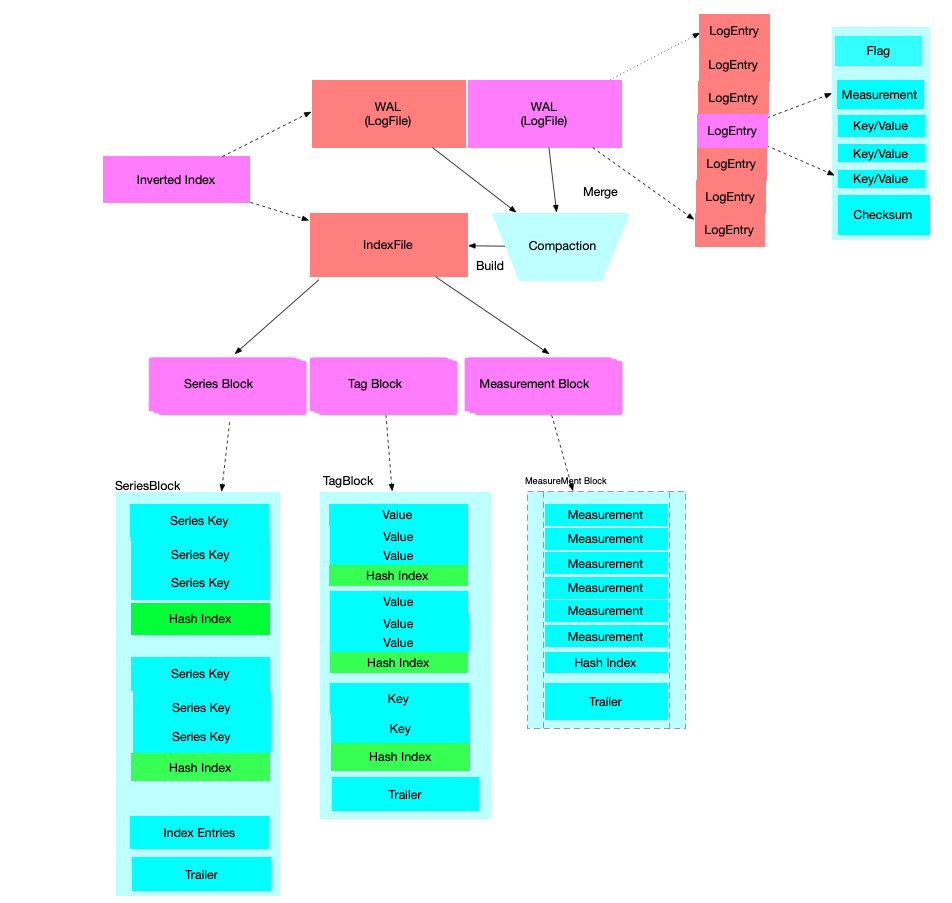

时间序列索引(Time Series Index)
术语表
| 术语 | 描述 | 简称 |
|---|---|---|
| Time Series Index | 时间序列索引 | TSI |
| Time-Structured Merge Tree | 时间结构合并树 | TSM |
| Log-Structured Merge Tree | 日志结构合并树 | LSM |
| Time Series | 时间序列 | TS |
| Time Series Key | 由measurement、tag key-value pair 和field Name 构成的唯一主键 |
TSK |
| Inverted Index | 倒排索引 | - |
TSI 的背景
Influxdb 数据摄入后，不仅存储数据信息，也会基于 measurement,tag 构建索引。从而能提供 高效的多维度查询能力。早期的时候，索引全部构建在内存中，这导致了influxdb 摄入数据的能力上限 受到机器内存的制约。 因此，引入了基于磁盘存储的索引。TSI 使用操作系统的页缓存来实现冷热数据的分离。热数据放在缓存， 而冷数据放在磁盘。
TSI 概览
Influxdb 实际看上去，像两个数据库合并为一,一个时间序列数据存储(TSM) 和一个对指标，标签，和元数据字段(field)的倒排索引 (TSI ).
InfluxDB actually looks like two databases in one, a time series data store and an
inverted index for the measurement, tag, and field metadata.
TSI 面临的挑战
在InfluxDB 1.3之前，TSI 只支持Memory-based的方式，即所有的TS的索引都是放在内存内。 这意味着，对于每个序列 SeriesKey (由 measurement、tag key-value pair 和 failed Name 构 成的唯一主键)，都会在内存中维护一个 SeriesKey 到序列的映射。 这种方式的好处就是查询效率高，但也 存在不少问题，主要的问题如下：
支持的Series基数有限。
主要受制于内存的限制。若TimeSeries个数超过上限，则整个数据库会处于不可服务的状态。这类问题 一般由用户错误的设计TagKey引发，例如某个TagValue是一个随机的ID。一旦遇到这个问题的话，也很 难恢复，往往只能通过手动删数据
进程重启，恢复数据的时间会比较长。
因为需要从所有的TSM文件中加载全量的TimeSeries信息来在内存中构建索引。
时间序列数据的序列分流问题。 这应该是最严重的问题
所谓的时间序列分流，指的是某些序列中的Tag value 值，会存在一段时间就消失了，常见的场景比如 容器环境下某个POD的ID，当POD飘逸后，之前的POD ID对应的序列就消失了。但这些序列还会在内存中 存在，这对于近期的数据查询来说是无效的，但是会严重的影响查询性能，而且随着时间的积累，内存的 这种序列会越来越多，最终导致服务不可用。
TSI 的解决方案
而在InfluxDB 1.3版本后，提供了另外一种方式的索引可供选择，新的索引方式会把索引存储在磁盘上，效 率上相比内存索引差一点，但是解决了上述的问题。
TSI 存储布局
TSI存储结构
TSI (Time Series Index) 也是一个 基于LSM 的数据库，主要包括如下四块:
索引： 包含一个数据分片的索引的数据集。
分区： 包含一个数据分片的 数据分区。- Influxdb的数据，首先会从时间范围做Shard，每个
时间范围内的Shard，会在基于SeriesKey做 Shard Partition.
日志文件： 包含 内存索引中最新写入的序列，类似WAL.
索引文件： 有日志文件（WLA）构建而成的包含一个不可变的，内存映射索引的索引，或是有两个
连续的索引文件合并而成的一个大索引文件
Index: Contains the entire index dataset for a single shard.
Partition: Contains a sharded partition of the data for a shard.
LogFile: Contains newly written series as an in-memory index and is persisted as a WAL.
IndexFile: Contains an immutable, memory-mapped index built from a LogFile or merged
from two contiguous index files.
TSI构建
写入逻辑
以序列写入流程，分析TSI的构建过程。
- 新的序列写入到达后，先加入序列文件，或者查找该序列是否存在，如果不存在，在生成一个自增的ID。
这个自增的ID 和 Measurement，Tag Key-Vaule Pair,Filed 是一一映射的
- 新写入的序列被发送给索引。索引维护了一个 由序列ID构成的 有序的 高效压缩位图RoaringBitmap , 并会忽略掉已经存在的序列ID。
- 对序列做Hash，然后发给合适的分区。
- 对应的分区将该序列写入 日志文件。
- 该日志文件，将该序列写入到 磁盘上的WAL，并将其加入到内存索引集合中。
合并逻辑
一旦 LogFile 超过1M大小，就会产生一个新的日志文件，之前的日志文件开始合并到索引文件中。 第一个索引文件是 Level1 (L1), 而之前的日志文件 可以认为是 Level 0 (L0). 索引文件也可以有两个小的索引文件合并而成。例如:两个连续的 L1 级的索引文件 可以合并为一个 L2 级的索引文件。
这部分应该是借鉴了LevelDB、Cassandra的Compaction方法。类似的实现，如HBase 的Stripe Compaction,更多Level Compaction 的相关信息，请移步6.4 Level Compaction
TSI 实现的功能
TSI的 是为了解决倒排索引问题，他需要回答的核心问题是：
- 当前有哪些指标?
- 有哪些标签？
- 给定的标签有哪些Value值？
- 一个指标包含那些序列ID？
- 给定一个标签，或一些标签，甚至一个模糊匹配的标签，能匹配到那些序列？
- 给定一个标签值能匹配到那些序列？
这几个问题，索引通过6种类型的迭代器解决。
以上的迭代器，是可以相互组合的。而且每种类型(measurement,tag key, tag value,series id等) 的迭代器，实现了交集，并集，差集的能力。MeasurementIterator(): Returns a sorted list of measurement names. TagKeyIterator(): Returns a sorted list of tag keys in a measurement. TagValueIterator(): Returns a sorted list of tag values for a tag key. MeasurementSeriesIDIterator(): Returns a sorted list of all series IDs for a measurement. TagKeySeriesIDIterator(): Returns a sorted list of all series IDs for a tag key. TagValueSeriesIDIterator(): Returns a sorted list of all series IDs for a tag value.Merge: Deduplicates items from two iterators. Intersect: Returns only items that exist in two iterators. Difference: Only returns items from first iterator that don’t exist in the second iterator.
TSI 的文件结构
概览
首先，提供一张概览视图，全局了解tsi 的文件结构。TSI 主要由四大文件构成：LogFile文件，Index文件，Mainfest文件，FileSet。下图展示了核心两大文件的结构图：

新增的序列，首先写入 WAL(LogFile)。LogFile 的文件结构很简单，有一个个LogEntry构成。 LogEntry 有一个Flag 标记当前的类型（增加/删除 序列或标签 ）, measurement，一系列的 k/v, 以及check sum构成。
随着LogFile文件的不断变大(超过5M的时候),会被Compaction合并,并构建成索引文件 Index File.
Index File 有三中类型的数据块构成。序列块(SeriesBlock)，标签块(Tag Block)，和指标块 (Measurement Block)。
各个文件结构详解
LogFile
LogFile 是由 按序写入磁盘的一系列 LogEntry构成。 LogFile 大小超过5MB 就会被合并为 Index 文件。 日志文件的 LogEntry 可能是如下接种类型：
- 增加的序列
- 删除的序列
- 删除的指标（measurement）
- 删除的标签键（TagKey）
- 删除的标签值 (TagValue)
日志文件也维护了一个 与现存的序列ID 和 tombstones 相关的 bisets.在服务启动的时候，可基于这些 bitsets 和 其他的日志文件 ，索引文件重新生成全量的 index bitsets.
IndexFile
Index File 有三个主要的类型的块文件构成： 序列块，一个和多个标签块，一个指标块。每个数据块的末尾，都包含一个 trailer. trailer 描述了 这些块的一些元信息，比如偏移量。
Manifest file
索引是有 WAL 和 Index文件 构成的一个有序集合。这些文件 在做合并和重写操作的时， 需要保持有序。保持有序是为了对 序列，指标，或标签 的标记删除有利。
当该集合的活动文件变动时，mainfest 文就会被重写，从而保持对该集合的追踪。在服务 启动时，manifest 能指定文件的顺序，并且不在manifest中的文件，会被从索引目录中删除；
索引文件的合并（compacting index file）
TSI的合并有两个主要步骤:
首先： 一旦日志文件大小超过阈值，他们就会被合并为一个索引文件。 日志文件的阈值会设置
的相对较小，主要处于如下两个原因的考虑:
- TSI 为了避免在内存堆中维护日志文件的索引。
- 小的日志文件也很容易转化为Index文件。
其次： 一旦一个连续的索引文件集超过了负载因子（通常为10倍），这些索引文件会被合并为一个大的索引 文件，老的索引文件会被丢弃。由于，所有的块都是有序的，新的索引文件可以流式传输，减小内存使用。
FileSet 解决并发问题
索引文件，虽然是不可修改的，但在做合并的时候，我们需要知道那些文件在被使用。为了解决这个问题，引入了 引用计数。一个FileSet 是由一系列有序的索引文件集构成。当文件集被索引获取时，计数器增加，当用户使用 完 fileSet时，引用计数器减少。计数器不为0的文件是不能被删除的。除了引用计数器，索引文件没有其它的锁 机制。